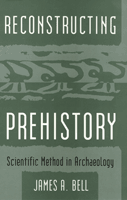

<body bgcolor="#FFFFFF" text="#000000" link="#0000FF" vlink="#CC0000" alink="#CC0000"><center><hr width="350" size="1" align="center" noshade>A bold new method of theorizing about the prehistoric past<hr width="350" size="1" align="center" noshade><p><a href="https://cdcshoppingcart.uchicago.edu/Cart/ChicagoBook.aspx?ISBN=9781566391597&&PRESS=temple" target="_top">Buy this book!</a> | <a href="https://cdcshoppingcart.uchicago.edu/Cart/Cart.aspx?PRESS=temple" target="_top">View Cart</a> | <a href="https://cdcshoppingcart.uchicago.edu/Cart/Cart.aspx?PRESS=temple" target="_top">Check Out</a></p><p></p></center><!--none//--><h1>Reconstructing Prehistory</h1>
<H2>Scientific Method in Archaeology</H2>
<h3>James A. Bell</h3>
<P>cloth 1-56639-159-8 $83.50, Jun 94, <FONT COLOR=#990033>Out of Stock Unavailable</FONT>
<br>paper 1-56639-160-1 $39.95, Jun 94, <FONT COLOR=#990033>Available</FONT>
<BR> 368 pp
6x9
</P><p>Reevaluating the method of scientific investigation, James A. Bell provides a bold philosophical framework for developing and assessing archaeologists' theories of the past. More informed and judicious decisions, the author asserts, are made when archaeologists explore questions such as:
<ul><li><p>How can theories be formulated so that they increase understanding and provide insight, and are theories still useful when they do not?
<li><p>How can theories be adjusted when anomalies are revealed?
<li><p>How can theories be assessed against competing theories?
<li><p>When should theories be abandoned, and when should they be pursued further?</ul>
<p>With numerous examples from archaeology as well as comparative examples from the physical and biological sciences, Bell illustrates how exploring the answers to these and related inquiries will lead to improved formulation and testing of theories.
<BR>&nbsp;<h2>Excerpt</h2><P>Excerpt available at <a href="http://www.temple.edu/tempress">www.temple.edu/tempress</a></p>
<BR>&nbsp;<h2>Contents</h2><P>
<p>Preface
<br>Introduction
<p><b>Part I: The Context and the Issues</b>
<br>1. Controversy Over Method in Theoretical Archaeology
<br>2. Issues in Theory Building and Assessment
<br>3. Testability
<p><b>Part II: The Philosophical and Methodological Roots</b>
<br>4. Induction
<br>5. The Paradigmatic View of Science
<br>6. The Refutationist View of Science
<br>7. The Anarchic View of Science
<p><b>Part III: Individualism and Cognitive Archaeology</b>
<br>8. Holism, Individualism, and Empathy
<br>9. Cognitive Archaeology
<p>Conclusion
<br>Bibliography
<br>Index
</P><BR>&nbsp;<H2>About the Author(s)</H2>
<P><b>James A. Bell</b> is Professor of Philosophy and Chair of the Philosophy Department at the University of South Florida.</P>
<BR><H2>Subject Categories</H2>
<p><A HREF="/tempress/philosophy.html" TARGET="_top">Philosophy and Ethics</a>
<BR><A HREF="/tempress/sociology.html" TARGET="_top">Sociology</a>
</p>
<p align="center"><a href="https://cdcshoppingcart.uchicago.edu/Cart/ChicagoBook.aspx?ISBN=9781566391597&&PRESS=temple" target="_top">Buy this book!</a> | <a href="https://cdcshoppingcart.uchicago.edu/Cart/Cart.aspx?PRESS=temple" target="_top">View Cart</a> | <a href="https://cdcshoppingcart.uchicago.edu/Cart/Cart.aspx?PRESS=temple" target="_top">Check Out</a></p><p><font face="Arial" size="1"><a href="copyright.html" onMouseOver="window.status='Web Copyright Policy';return true;" onMouseOut="window.status=''" title="Web Copyright Policy">&copy;</a> 2015 <a href="http://www.temple.edu" target="new" onMouseOver="window.status='Link to Temple University home page';return true;" onMouseOut="window.status=''" title="Link to Temple University home page">Temple University</a>. All Rights Reserved. http://www.temple.edu/tempress/titles/1007_reg.html</font></p>